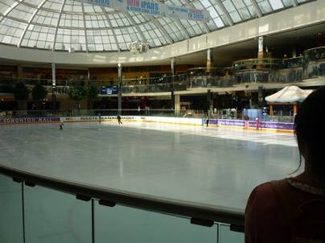
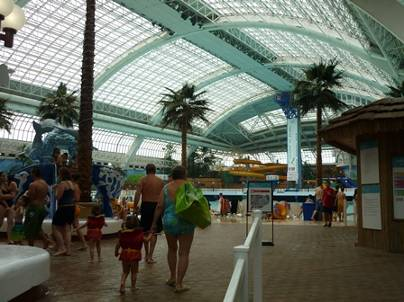
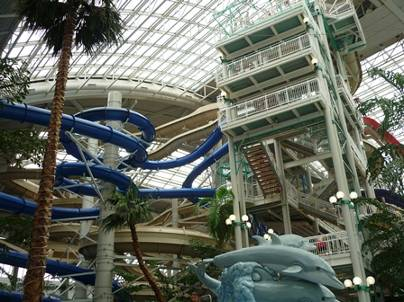
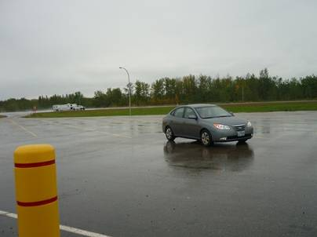
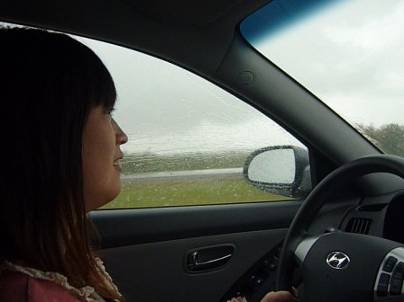
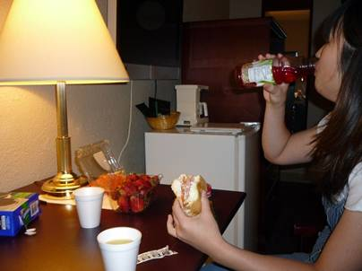
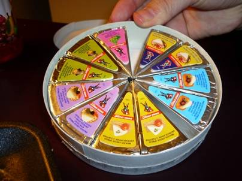
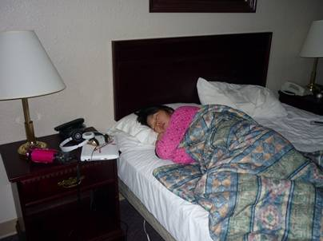

９日目(9/12)～屋内プール～
toValleyview

今日はエドモントンに別れを告げ、いよいよ極北を目指して北上を開始する日だが、昨日遊びに行ったモールに今日も行き、屋内プールで泳ぐことにした。昨日ライブを行っていたスケートリンクは、すっかり機材が片付けられ、氷のリンクでお客さんたちが優雅にスケートを楽しんでいた。


これがその屋内プール。人の数は多すぎず、少なすぎず、スライダーにも数分並べば滑れるほどの人数しか並んではいなかった。波の出るプールやジャグジーなどでゆったりと過ごした。左写真奥に写っているのは屋内では世界最高落差というバンジージャンプ。お客さんが飛び降りる直前になると建物全体にサイレンが鳴り響き、皆の注目の的の中ダイブすることになる。チキってなかなか飛ばない場合、ブーイングは必至だ。


テント暮らしでの疲れを癒した都会を離れ、今日の宿、High Valley Motor InnのあるValleyviewへと向かう。雲行きがあまりよくなく、雨が何度か降った。


宿の近くにはレストランもあったが、節約もかねて市街のスーパーに行き、出来合い物を購入。日本ではビールのつまみに欠かせない6Pチーズは、カナダでは12Pチーズとして売られていた。

おやすみなさい･･･